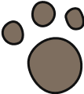
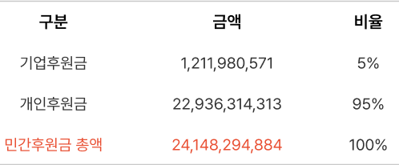
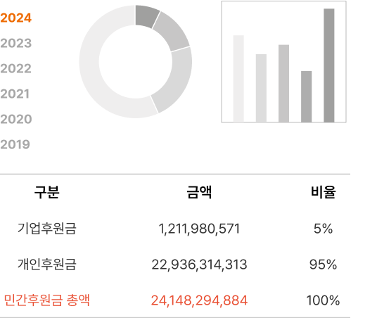

포인핸드는 매년 1만 마리 이상의 유기동물에게
소중한 가족을 찾아주고 있습니다.
-
실종동물 찾기
반려동물 실종 시 전단지와 보호동물 공고를 통해 안전한 귀가를 돕고있습니다.
 -
입양한 유기동물의
건강검진 지원입양 후 건강하고 행복한 생활을 위해 입양한 유기동물의 건강검진을 지원하고 있습니다.
-
유기동물 입양 정보
전국 유기동물 보호소에 구조된 유기동물 알림 서비스를 통해 입양을 돕고 있습니다.
데려가.
-
입양 가족 혜택 확대
건강검진 지원입양 후 건강하고 행복한 생활을 위해 입양한 유기동물의 건강검진을 지원하고 있습니다.
ABANDONED ANIMALS
전국 유기동물 통계
전국 유기동물 현황
2016년 06월 01일 ~ 2023년 07월 19일
- 보호중
20,441마리
- 입양
62,120마리
- 반환
28,914마리
- 자연사
69,390마리
- 안락사
40,003마리
- 방사
69,390마리
- 기증
40,003마리
PAWINHAND ACTIVITIES
포인핸드에서는 어떤 일들을 하나요?
SPONSORSHIP
후원금은 어떻게 사용되나요?
수입
2020년도 포인핸드 민간 후원금 수입
후원금 사용내역
후원금 사용 내역을 그래프와 표로 볼 수 있습니다. 연도별 후원금 사용 내역을 확인해보세요
-

유기동물은 어떻게 입양하나요?
유기동물을 어떻게 입양하는지 궁금하다면?
포인핸드에서 입양 절차를 자세히 알려줄게요. 입양 절차를 확인하고 신중히 결정해주세요. -

입양 후 필요한 물품은 뭐가 있나요?
반려동물을 가족으로 맞이하기 위해선 많은 물품이 필요해요. 어떤 물품이 필요할까요?
아이가 쉽게 적응할 수 있도록 미리 확인하고 준비해주세요. -

입양을 기다리는 동물들이 궁금하다면
매일 많은 동물들이 구조되고 있어요.
당신의 반려동물이 되기를 기다리고 있는 아이가 있는지 봐주세요. -

유기동물 입양 가정은 어떻게 지낼까?
유기동물과 가족이 된 이들은 어떤 하루를 보내고 있을까요? 사랑스러운 반려동물과 어떻게 지내는지 궁금하다면, 유기동물 입양 가정의 그들의 후기를 확인하세요!